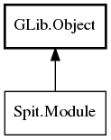

Module
Object Hierarchy:

Description:
public interface Module :
Object
A Module represents the resources of an entire dynamically-linked module (i.e. a .so/.la).
A module holds zero or more Shotwell plugins (Pluggable). Once the module has been
loaded into process space this object is retrieved by Shotwell. All calls to the module and its plugins are resolved through this
interface.
Note: The module is responsible for holding the reference to the Module object, of which there should be only one in the library file.
The module should implement a g_module_unload method and drop the reference there.
Namespace: Spit
Package: shotwell-plugin-dev
Content:
Methods:
-
public abstract unowned
string get_module_name ()
Returns a user-visible string describing the module.
-
public abstract unowned
string get_version ()
Returns a user-visible string describing the module version.
-
public abstract unowned
string get_id ()
Returns a unique identifier for this module.
-
public abstract weak Pluggable[]? get_pluggables ()
Returns an array of Pluggable that represent each
plugin available in the module.